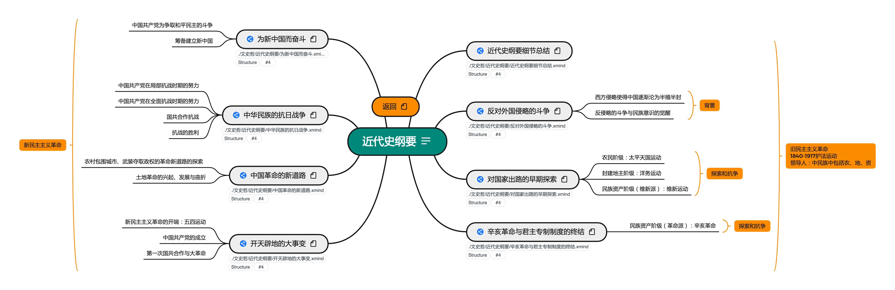

2022.09.11

知识点总结
近代史纲要按照陆寓丰(腿姐)考研课程进行梳理。
链接: https://pan.baidu.com/s/1L8VTQbpa8-xFXVeSl20uTg
提取码: Xuc6
如果资源失效请联系我
V1 2021.9.22
按照陆寓丰(腿姐)考研课程进行整理，完成全部知识框架搭建
V2 2021.11.13
按照陆寓丰(腿姐)考点清单与练习进行吸收理解，易错点标注（由@bywcy完成）
V3 2021.11.17
根据陆寓丰(腿姐)背诵手册进行再次梳理，完成《肖1000》练习总结
V4 2022.09.11
根据肖秀荣1000题与徐涛强化版笔记总结成知识笔记